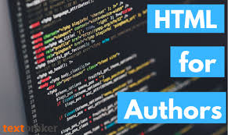

Coding is a tool for mathematics. Through learning fun coding, kids will learn how mathematics is closely related to coding. It is also a tool that helps improve logical thinking skills, guiding kids to reach out to different areas successfully. Coding is demanded and required. At the same time, learning to code will advantage and benefit your kids in future.